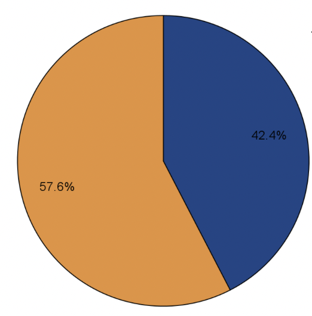

When it comes to the acceptance of upper limb prostheses, more than 60% of respondents stated that cosmesis is a necessary component of fabrication design and approximately 40% of respondents stated that cosmesis is determined by the patient and their specific goals. The reduction in cosmetic appearance, combined with the inability to easily conceal an amputated hand or arm, can have an impact on a patient's perception of the overall cosmesis of their device. One common theme expressed by respondents was that if a patient does not accept the cosmesis of their device, they are less likely to use it. According to respondents, exoskeletal finishes with fabrics or colour match pigments were the most popular cosmetic finishes chosen by patients, with 54.4%, followed by cosmetic gloves with 33.8%. Patient preference, age, background, material costs, and availability could all be factors in these outcomes. According to the survey results, clients valued device shape, color, and size the most from their experiences. Many respondents also stated that cosmesis is influenced by the user's preferences and expectations.
We were interested in learning about the real-life experiences of treatment care providers in the Prosthetics and Orthotics field, so we explored the topic of device rejection due to device cosmesis in our survey.
When we asked if patients had ever rejected their devices because of their appearance, we received nearly a 50/50 split from respondents. 51.5% of respondents did have their device rejected by patients due to cosmesis. Some of the reasons for device rejection were shape of device, size of device was too big compared to the contralateral limb, poor colour match to patient’s skin tone and misorientation of the print of the lamination fabric.
48.5% of respondents said they had never had a patient reject their device due to cosmetic reasons. These individuals indicated some of the following protective factors to device rejection: Setting realistic expectations at the beginning and; building a trusting relationship between the client and the team.
A gap in the literature that we identified was that there is little to no discussion about the reason for amputation and if that has any impact on type of cosmetic finish the patient choses. 60% of survey respondents said that the type of cosmetic finish does not depend on the reason for amputation, it depends on the individual and their personality. Those who said “yes, the reason for amputation impacts the type of cosmetic finishing chosen by patients” generally indicated that those with acquired amputations tend to lean towards their prostheses looking more “lifelike” or similar to their lost limb. Those with Congenital amputation may be more accepting of their limb difference so they tend to be more expressive with their choice of cosmetic finishings however this can vary person to person.
57.6% do not think there's a correlation between the type of amputation (Congenital and acquired) and 42.4% think there is